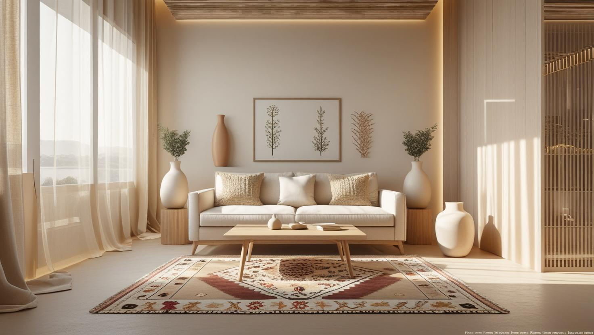
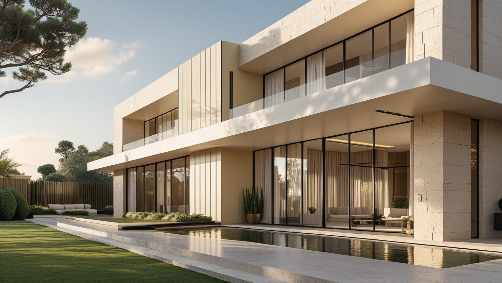

İstanbul Gaziosmanpaşa Profesyonel Boya Ustası
20 yıllık tecrübemizle Gaziosmanpaşa'da eski apartman dairesi, dönüşüm konutu ve dükkân için boya badana yapıyoruz. Duvar ve tavanın yanında kapı, pervaz ve kalorifer peteğini de keşifte kalem kalem planlıyoruz.
Gaziosmanpaşa'da Boya Badana: Yenilenen ve Eski Yapı Bir Arada
Gaziosmanpaşa boyacı talebi ilçedeki iki farklı yapı grubundan geliyor. Kentsel dönüşümle yenilenen bölgelerde yeni teslim daireler, diğer bölgelerde ise daha fazla yüzey hazırlığı isteyen eski apartman stoğu bulunuyor.
Yeni teslim dairede duvar alçı sıvalı ve düzgün olduğu için iş astar ve kat uygulamasına odaklanıyor; buna karşılık ilk yıl içinde ince oturma çatlakları çıkabiliyor. Eski yapıda ise kabarmış eski boyanın raspası ve tavan kenarı onarımı işin ana kalemi.
İlçede apartman ortak alanı ve merdiven boşluğu işleri de düzenli talep ediliyor; ortak alanlarda bölüm bölüm ilerleyerek giriş çıkışı açık tutuyoruz.
Hizmetlerimiz

İç Mekan Boyama
Gaziosmanpaşa'daki eski dairelerde iç cephe işi yalnız duvarla sınırlı kalmayabilir; yağlı boyalı kapılar, pervazlar ve kalorifer petekleri de yenilenmek istenebilir. Hangi yüzeyin işe dahil olduğu keşifte tek tek yazılır.
- Yağlı boyalı kapıda zımpara ve astar
- Isıya dayanıklı petek boyası
- Tavan ve duvarda ayrı renk planı
- Eşyalı dairede örtülü çalışma

Dış Cephe Boyama
Eski bir apartmanın dış cephesinde sıva kabarmaları, balkon korkuluklarındaki pas izleri ve saçak altları boyadan önce onarılacak kalemler olarak listelenir. Gaziosmanpaşa'da dönüşümle yapılmış yeni bloklarda ise cephe bakımının kapsamı site yönetimiyle birlikte belirlenir.
- Balkon korkuluğunda pas temizliği
- Saçak altı ve sıva kabarması onarımı
- Site yönetimiyle cephe bakım planı
- Onarım ve boya kalemleri ayrı teklif

Dekoratif Boyama
Eski dairelerdeki kartonpiyer ve tavan göbeği gibi detaylar, duvardan ayrılan bir renkle yeniden öne çıkarılabilir. Gaziosmanpaşa'daki eski ahşap kapılar da duvar rengiyle uyumlu yeni bir tona boyanarak odanın görünümünü tamamlayabilir.
- Kartonpiyer ve tavan göbeği boyası
- Tavanla duvar arasında renk geçişi
- Ahşap kapıda yeni ton
- Pervaz ve süpürgelik renk uyumu
Fiyat Tablosu
| Hizmet Türü | Metrekare Fiyatı | Ortalama Süre (100m²) | Garanti |
|---|---|---|---|
| İç Cephe Boyama | 100-200 TL | 2-3 Gün | Uygulama kapsamına göre |
| Dış Cephe Boyama | 150-280 TL | 3-5 Gün | Uygulama kapsamına göre |
| Dekoratif Boyama | 250-500 TL | 4-7 Gün | Uygulama kapsamına göre |
| Ofis Boyama | 120-220 TL | 2-4 Gün | Uygulama kapsamına göre |
Metrekare fiyatları yaklaşık ön değerlendirme aralığıdır. Uygulanacak ölçüm yöntemi, boyanacak alanın kapsamı, yüzey durumu, tamirat ihtiyacı, kat sayısı ve malzeme seçimi keşif sırasında netleştirilir.
Dış cephe boya fiyatları uygulama alanı için yaklaşık 150–280 TL/m² aralığındadır. Kesin hesaplama yöntemi ve teklif; yüzey durumu, bina yüksekliği, erişim veya iskele ihtiyacı, tamirat kapsamı, boya sistemi ve uygulanacak kat sayısına göre keşif sırasında netleştirilir.
Uygulama kapsamına göre işçilik garantisi sağlanır. Garanti kapsamı ve istisnaları teklif veya iş sözleşmesinde belirtilir.
Bu rakamlar İstanbul Boyacılık'ın 2026 gösterge fiyat aralığıdır. Bir piyasa ortalaması değildir. Kesin fiyat; yüzey durumu, hazırlık ve tamirat miktarı, uygulanacak kat sayısı, seçilen malzeme sınıfı, ulaşım ve kat koşulları ile evin eşyalı mı boş mu olduğu keşifte görüldükten sonra belirlenir.
Gaziosmanpaşa'da aralığı belirleyen şey dairenin hangi yapı grubuna girdiği. Yeni teslim dairelerde hazırlık az; eski yapıda raspa ve tamirat kalemi devreye girdiğinde aynı metrekare aralığın üst tarafına doğru çıkıyor.
Gaziosmanpaşa'da Eski Dairede Kapı, Pervaz ve Petek Boyası
Eski dairelerde kapı, pervaz ve kalorifer peteği yağlı boyayla boyanmış olabilir; bu yüzeylere hazırlık yapmadan su bazlı boya sürülürse yeni boya tutunmaz ve kısa sürede soyulur.
Yağlı boyalı yüzey önce yağ ve kirden arındırılıp zımparalanır, ardından yeni boyanın tutunmasını sağlayan bir astar uygulanır. Kapı kanatlarında eski boya katları kalınlaşıp kapı kasaya sürtüyorsa kabaran bölümlerin raspası da hazırlığa eklenir.
Kalorifer peteğinde ısıya dayanıklı boya kullanılır ve uygulama petek tamamen soğuduktan sonra yapılır; sıcak petekte boya düzgün yayılmaz ve koku yapar. Petek arkaları ve boru geçişleri fırçayla ulaşılabildiği ölçüde boyanır, bunun kapsamı teklifte ayrıca belirtilir.
Soyulan ve dökülen boyanın diğer nedenlerini boyanın neden dökülüp soyulduğunu anlatan yazımızda bulabilirsiniz.
Sarıgöl ve Diğer Dönüşüm Konutlarında Site Yönetimiyle Boya Planı
Sarıgöl'deki gibi kentsel dönüşümle yapılan site düzenindeki konutlarda daire boyası, işe başlamadan önce site yönetiminin kurallarına göre planlanır.
Gaziosmanpaşa'daki dönüşüm projeleriyle yapılan bu tip sitelerde çalışma saatleri, asansör kullanımı, malzeme aracının nereye yanaşacağı ve atıkların nasıl çıkarılacağı genellikle yönetim tarafından belirlenir. Keşif günü bu kuralları öğrenip iş takvimini onlara göre hazırlıyoruz:
- Asansör ve hol: Kabin iç yüzeyi ve kat holü, malzeme taşınmadan önce örtülür.
- Ortak alan: Boya karışımı ve rulo yıkama ortak alanda değil daire içinde yapılır.
- Otopark: Malzeme bekletilecekse yalnız yönetimin gösterdiği alan kullanılır.
- Araç girişi: Malzeme aracının site içine girişi ve bekleme yeri site görevlileriyle önceden konuşulur.
Gaziosmanpaşa Boya Badana Teklifinde Hangi Kalemler Ayrı Yazılmalı?
Gaziosmanpaşa boya badana tekliflerini karşılaştırırken yalnız metrekare fiyatına değil, hangi yüzeylerin, hazırlık işlerinin ve malzemenin teklife dahil olduğuna bakmanız gerekir.
- Yüzeyler: Duvar, tavan, kapı, pervaz ve petek ayrı ayrı mı, yoksa tek kalemde mi yazılmış?
- Hazırlık: Raspa, çatlak dolgusu, macun ve zımpara teklife dahil mi, yoksa iş sırasında ayrıca mı hesaplanacak?
- Malzeme: Astar ve boyanın markası, ürün sınıfı ve uygulanacak kat sayısı belirtilmiş mi?
- Koşullar: Eşyalı çalışma, kat ve erişim durumu ile iş sonu temizliği kapsamda mı?
Sayfadaki fiyat tablosunda hizmet türüne göre metrekare başına gösterge aralıkları yer alır; genel maliyet kalemlerini 2026 ev boyama fiyatları rehberimizde de görebilirsiniz. Bu kalemler keşifte tek tek netleştiğinde size yazılı bir teklif iletiyoruz.
Gaziosmanpaşa'da Taşınmadan Önce Boş Dairede Boya ve İş Sırası
Yeni bir daireye taşınacaksanız boyayı eşyalar gelmeden yaptırmak hazırlığı kısaltır ve zeminin korunmasını kolaylaştırır; ancak diğer yenileme işleriyle sıranın doğru kurulması gerekir.
Elektrik hattı, su tesisatı ya da petek borusunun yerini değiştirmek gibi duvar kırılmasını gerektirebilecek işler boyadan önce bitirilmelidir; aksi hâlde yeni boyanan duvarda tamir izi kalır. Mutfak dolabı veya vestiyer gibi duvara sabitlenecek mobilyaların yerini önceden bilmek, dolap arkasında kalacak duvarlarda gereksiz iş yapılmasını önler.
Boya dokunulduğunda kuru hissettirse de tam sertleşmesi zaman alır; mobilyaları hemen duvara dayamamak gerekir. Kurumayı etkileyen nem ve sıcaklık gibi etkenleri duvar boyasının ne kadar sürede kuruduğunu anlatan yazımızda bulabilirsiniz. Taşınma tarihinizi keşifte paylaşmanız, boya günlerinin nakliyeye göre planlanmasını kolaylaştırır.
Gaziosmanpaşa’da Hizmet Verdiğimiz Mahalleler
Sarıgöl'deki dönüşüm konutlarından Küçükköy semtine, Merkez ve Pazariçi'nden Yıldıztabya'ya kadar Gaziosmanpaşa boyacı olarak aşağıdaki mahallelerde keşif ve uygulama yapıyoruz:
Gaziosmanpaşa Mahalleleri
- Gaziosmanpaşa Bağlarbaşı Mahallesi
- Gaziosmanpaşa Barbaros Hayrettin Paşa Mahallesi
- Gaziosmanpaşa Fevzi Çakmak Mahallesi
- Gaziosmanpaşa Hürriyet Mahallesi
- Gaziosmanpaşa Karadeniz Mahallesi
- Gaziosmanpaşa Karayolları Mahallesi
- Gaziosmanpaşa Karlıtepe Mahallesi
- Gaziosmanpaşa Kazım Karabekir Mahallesi
- Gaziosmanpaşa Merkez Mahallesi
- Gaziosmanpaşa Mevlana Mahallesi
- Gaziosmanpaşa Pazariçi Mahallesi
- Gaziosmanpaşa Sarıgöl Mahallesi
- Gaziosmanpaşa Şemsipaşa Mahallesi
- Gaziosmanpaşa Yeni Mahalle Mahallesi
- Gaziosmanpaşa Yenidoğan Mahallesi
- Gaziosmanpaşa Yıldıztabya Mahallesi
Gaziosmanpaşa Boyacılık Müşteri Yorumları
"Gaziosmanpaşa'da iç cephe boyama hizmeti aldım. İşçilik çok kaliteli ve zamanında teslim ettiler. Tavsiye ederim!"
Ali Korkmaz
Mevlana Mahallesi / Gaziosmanpaşa
"Ofis boyama için anlaştık, ekip çok profesyoneldi. Kaliteli boya ve titiz çalışma vardı."
Betül Şahin
Karadeniz Mahallesi / Gaziosmanpaşa
"Dış cephe boyama işlerimizi zamanında ve sorunsuz tamamladılar. Fiyat/performans dengesi harika."
Cem Yılmaz
Barbaros Mahallesi / Gaziosmanpaşa
Faydalı Bağlantılar
Gaziosmanpaşa boya badana planında fiyat hesabı, boya markası ve yakın ilçe seçeneklerini birlikte değerlendirmek için aşağıdaki rehberler kullanılabilir.
Gaziosmanpaşa Boyacı Ustasına Sık Sorulan Sorular
Gaziosmanpaşa'da boya badana için keşif ücretli mi?
Keşif ücretsizdir. Keşifte boyanacak yüzeyleri ölçüyor, tamirat gerektiren noktaları işaretliyor ve kullanılacak boya sınıfını sizinle konuşuyoruz; ardından yazılı teklif hazırlıyoruz. Teklifi değerlendirip karar vermek size kalır.
Kalorifer peteği boyası kışın yapılabilir mi?
Yapılabilir. Boyanacak peteğin vanası kapatılır, petek tamamen soğuduktan sonra boyanır ve boya kuruyana kadar yeniden açılmaz. Evin ısınmaya ihtiyacı varsa petekler oda oda sırayla boyanır, böylece bütün ev birden soğuk kalmaz.
Tavanda kartonpiyer varsa boyadan önce ne yapılıyor?
Kartonpiyerin tavan ve duvarla birleştiği derzlerde çatlak varsa önce akrilik dolguyla kapatılır; kırık ya da kopmuş parça varsa onarımı boyadan önce yapılır. Ardından kartonpiyer tavanla aynı renkte ya da ayrı bir tonda boyanabilir; bu seçimi keşifte odanın ışığına bakarak birlikte yapıyoruz.
Yeni binada çıkan ince çatlaklar sorun mu?
İlk yıllarda görülen ince oturma çatlakları genellikle yapısal bir sorun değil. Önemli olan boyamadan önce uygun dolgu ve bantla kapatılmaları; doğrudan üzeri boyanan çatlaklar kısa süre sonra yeniden belirginleşiyor.
Eski dairede raspa şart mı?
Her yüzeyde değil. Eski boya sağlam tutunuyorsa raspa gerekmeyebiliyor; kabarma, soyulma veya tozuma varsa gerekiyor. Keşifte yüzeyi elle ve gözle kontrol edip hangi bölümde raspa gerektiğini ölçüyoruz.
Boya işi için evi boşaltmam gerekiyor mu?
Gerekmiyor. Eşyalar oda düzenine göre toplanıp örtülerek çalışılabiliyor. Boş evde iş daha hızlı ilerliyor ama eşyalı çalışma da standart uygulamamız.
İletişim
İletişim Bilgileri
Telefon: 0507 832 29 12
E-posta: boyaustamistanbul@gmail.com
10+ Uzman Ustamızla Gaziosmanpaşa ve çevresine hizmet veriyoruz.
Çalışma Saatleri: Pzt-Cmt 00:00-23:59